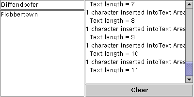

Feedback Form
|
|
Start of Tutorial > Start of Trail > Start of Lesson |
Search
Feedback Form |
A Swing text component uses aDocumentto hold and edit its text. Document events occur when the content of a document changes in any way. You attach a document listener to a text component's document, rather than to the text component itself.
[PENDING: Add a link to "Implementing a Document Filter" in generaltext when it becomes available.]
The following example demonstrates document events on two plain text components.
 [PENDING: new screenshot with sample output forthcoming.]
Try this:
- Run DocumentEventDemo using JavaTM Web Start. Or, to compile and run the example yourself, consult the example index.
- Type in the text field at the upper left of the window or the text area beneath the text field.
One document event is fired for each character typed.- Delete text with the backspace key.
One document event is fired for each backspace key typed.- Select text and then delete it by typing backspace or by using a keyboard command such as
CTRL-X(cut).
One document event is fired for the entire deletion.- Copy text from one text component into the other using keyboard commands such as
CTRL-C(copy) andCTRL-V(paste).
One document event is fired for the entire paste operation regardless of the length of the text pasted. If text is selected in the target text component before the paste command is issued, an additional document event is fired because the selected text is deleted first.You can find the demo's code in
DocumentEventDemo.java. Here is the demo's document event handling code:
Document listeners shouldn't modify the contents of the document; The change is already complete by the time the listener is notified of the change. Instead, write a custom document that overrides thepublic class DocumentEventDemo ... { ...//where initialization occurs: textField = new JTextField(20); textField.addActionListener(new MyTextActionListener()); textField.getDocument().addDocumentListener(new MyDocumentListener()); textField.getDocument().putProperty("name", "Text Field"); textArea = new JTextArea(); textArea.getDocument().addDocumentListener(new MyDocumentListener()); textArea.getDocument().putProperty("name", "Text Area"); ... class MyDocumentListener implements DocumentListener { String newline = "\n"; public void insertUpdate(DocumentEvent e) { updateLog(e, "inserted into"); } public void removeUpdate(DocumentEvent e) { updateLog(e, "removed from"); } public void changedUpdate(DocumentEvent e) { //Plain text components don't fire these events } public void updateLog(DocumentEvent e, String action) { Document doc = (Document)e.getDocument(); int changeLength = e.getLength(); displayArea.append( changeLength + " character" + ((changeLength == 1) ? " " : "s ") + action + doc.getProperty("name") + "." + newline + " Text length = " + doc.getLength() + newline); } }insertStringorremovemethods, or both. See Listening for Changes on a Documentfor details.
The DocumentListener Interface
DocumentListenerhas no adapter class.
Method Purpose changedUpdate(DocumentEvent)Called when the style of some of the text in the listened-to document changes. This sort of event is fired only from a StyledDocument— aPlainDocumentdoes not fire these events.insertUpdate(DocumentEvent)Called when text is inserted into the listened-to document. removeUpdate(DocumentEvent)Called when text is removed from the listened-to document. Each document event method is passed an object that implements the
DocumentEventinterface. Typically, this is an instance ofDefaultDocumentEventAbstractDocument.
Method Purpose Document getDocument()Returns the document that fired the event. Note that the DocumentEventinterface does not inherit fromEventObject. Therefore, it does not inherit thegetSourcemethod.int getLength()Returns the length of the change. int getOffset()Returns the location within the document of the first character changed. ElementChange getChange(Element)Returns details about what elements in the document have changed and how. ElementChangeDocumentEventinterface.EventType getType()Returns the type of change that occurred. EventTypeDocumentEventinterface that enumerates the possible changes that can occur on a document: insert text, remove text, and change text style.
The following table lists the examples that use document listeners.
Example Where Described Notes DocumentEventDemoThis section Reports all document events that occur on the documents for both a text field and a text area. One listener listens to both text components and uses a client property on the document to determine which component fired the event. TextComponentDemoListening for Changes on a Document Updates a change log every time text in the listened-to document changes. The document in this example supports styled text, so changedUpdategets called in this example. Requires this additional source file:LimitedStyledDocumentTextFieldDemoListening for Changes on a Document Registers one document listener on three text fields. The listener computes a numeric value based on numeric values entered into the three text fields by the user.
|
|
Start of Tutorial > Start of Trail > Start of Lesson |
Search
Feedback Form |
Copyright 1995-2004 Sun Microsystems, Inc. All rights reserved.